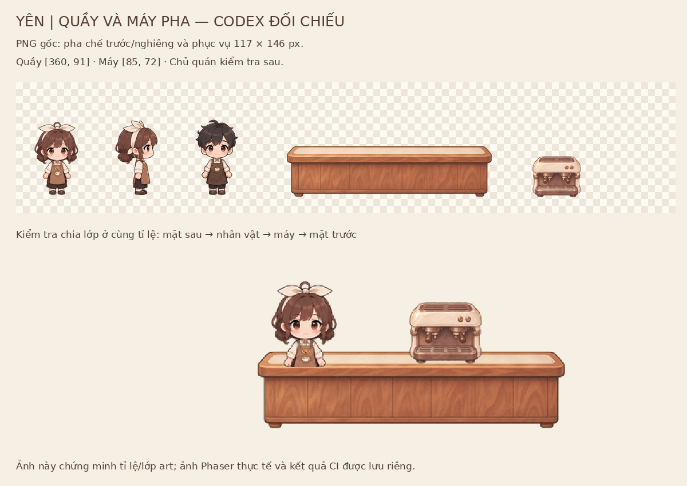

Quầy và máy pha — đối chiếu v1
Codex tự đánh giá theo uỷ quyền. Chủ quán kiểm tra sau.
Nhân vật 117 × 146 px, quầy 360 × 91, máy 85 × 72. Mặt sau và mặt trước lấy từ cùng ảnh, nhân vật đứng giữa hai lớp. Máy và hơi nóng là lớp riêng.

Ảnh trên là bảng đối chiếu vật liệu, kích thước và chia lớp. Kiểm tra cảnh thật, nhiệm vụ pha chế và hơi máy trong game.
Vào game kiểm tra · Ly, sách, gối · Bàn